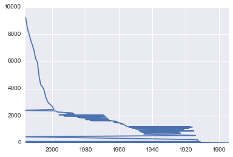
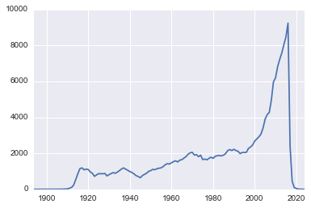
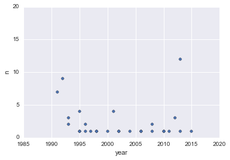
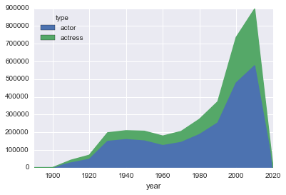
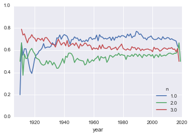

My super title
Posted on Wed 20 April 2016 in pandas
import pandas as pd import numpy as np import seaborn as sns %matplotlib inline
/usr/local/lib/python2.7/site-packages/IPython/html.py:14: ShimWarning: The IPython.html package has been deprecated. You should import from notebook instead. IPython.html.widgets has moved to ipywidgets. "IPython.html.widgets has moved to ipywidgets.", ShimWarning)
%matplotlib inline gives the plotting lib permission to draw diagrams inside the notebooks rather than popping out new figure windows everytime which is kind of annoying.
Encoding
The data that we have in csv format might or might not work for you. It actually depends on the system settings. Generally the system should tell python to expect all text files to be encoded in utf-8 format (unicode encoding). not all systems are configured in such way. In case you get some error loading displaying the data, you can tell python to set encoding as 'utf-8'. (Actors/ movie names can have international characters). Sometimes this might be an issue in displaying even after loading. To make sure this doesn't happen, you can do:
import sys
reload(sys)
sys.setdefaultencoding('utf-8')
Data
Almost all the examples will include two dataframes: * titles.csv (Name and year of release of all the famous movies in imdb) * cast.csv (this might have a movie appear many given times because title and year of movie will appear once for each person who is listed in credits for the movie. n is the position of the credits where the actor/actress appears)
# Lets load the Movie titles titles = pd.DataFrame.from_csv('data/titles.csv', index_col=None, encoding='utf-8')
# Load all the casts in the movies cast = pd.DataFrame.from_csv('data/cast.csv', index_col=None, encoding='utf-8')
cast[cast.title == "Love"].head()
| title | year | name | type | character | n | |
|---|---|---|---|---|---|---|
| 49605 | Love | 2003 | Brian (XIV) Anderson | actor | Prison Doctor | NaN |
| 63909 | Love | 2003 | Anthony K. Aquino | actor | Prison Guard #4 | NaN |
| 69164 | Love | 2005 | Eugenio (II) Arias | actor | Receptionist | 15 |
| 95120 | Love | 2008 | Fauzi Baadila | actor | Rama | NaN |
| 107887 | Love | 2011 | Steve Bakken | actor | Doctor | 36 |
This might have a given movie appear many times because the title and year of movie will appear once for each person who is listed in the movie.
If you simply mention the name of the df then not all the contents of the df will be displayed. Instead it will show some from beginning and some from the end. It basically shows you an excerpt of the df
titles
| title | year | |
|---|---|---|
| 0 | The Rising Son | 1990 |
| 1 | Ashes of Kukulcan | 2016 |
| 2 | The Thousand Plane Raid | 1969 |
| 3 | Crucea de piatra | 1993 |
| 4 | Country | 2000 |
| 5 | Gaiking II | 2011 |
| 6 | The Fresh Air Will Do You Good | 2008 |
| 7 | Alex in Wonderland | 1970 |
| 8 | Women's Prison | 1955 |
| 9 | Do Outro Lado do Mundo | 2008 |
| 10 | Severny variant | 1974 |
| 11 | Slave by Name | 2017 |
| 12 | Charlie's Ear | 1992 |
| 13 | Insaaf Main Karoonga | 1985 |
| 14 | Poka Makorer Ghar Bosoti | 1996 |
| 15 | Hi, Buddy | 1943 |
| 16 | Los siete locos | 1973 |
| 17 | Panic Room | 2002 |
| 18 | Io sono un autarchico | 1976 |
| 19 | Mr. Justice Raffles | 1921 |
| 20 | Mahapurush | 1965 |
| 21 | Maa Durga Shakti | 1999 |
| 22 | Patria | 1917 |
| 23 | Passenger Side | 2009 |
| 24 | Ang pumatay ng dahil sa iyo | 1989 |
| 25 | Conflict of Interest | 1993 |
| 26 | The Syndicate | 2011 |
| 27 | Suzanne, professeur de flirt | 1916 |
| 28 | Arrive Alive | 1990 |
| 29 | Tera Mera Saath Rahen | 2001 |
| ... | ... | ... |
| 216507 | Fred & Vinnie | 2011 |
| 216508 | The Outcast | 1984 |
| 216509 | Diary of a Mad Black Woman | 2005 |
| 216510 | The Second Coming (IV) | 2014 |
| 216511 | The Minister of Chance | 2016 |
| 216512 | Dan xin pu | 1980 |
| 216513 | Druzina | 2016 |
| 216514 | The Legend of Kate Kensington | 2015 |
| 216515 | Time of the Comet | 2008 |
| 216516 | Agreement | 1980 |
| 216517 | Monsters University | 2013 |
| 216518 | This Killing Business | 2013 |
| 216519 | Berlina - Eine Reise ins Ungewisse | 1991 |
| 216520 | Die Herrgottsgrenadiere | 1932 |
| 216521 | Meglio baciare un cobra | 1986 |
| 216522 | Kvaska | 2007 |
| 216523 | Counterpoint | 1967 |
| 216524 | Den sidste dag | 2004 |
| 216525 | Take This Job and Shove It | 1981 |
| 216526 | Le temps de l'aventure | 2013 |
| 216527 | Cargaison clandestine | 1947 |
| 216528 | Clara no es nombre de mujer | 2012 |
| 216529 | Benzina | 2001 |
| 216530 | Kasaysayan ng lahi | 1973 |
| 216531 | Hu tu nu si ji | 1982 |
| 216532 | Nobody Waved Good-bye | 1964 |
| 216533 | E yue | 2005 |
| 216534 | Lakota Girls | 2015 |
| 216535 | Kroniki domowe | 1997 |
| 216536 | The Sting II | 1983 |
216537 rows × 2 columns
To get the length of the df, you can simply use len()
len(cast)
3383167
To get the columns of the pandas df, you can use df.columns
titles.columns
Index([u'title', u'year'], dtype='object')
To get only a few columns, you can pass them as a list of columns to be displayed
cast[50:55][['year', 'name']]
| year | name | |
|---|---|---|
| 50 | 1963 | 'Pucherete' |
| 51 | 2002 | 'Raff' |
| 52 | 2016 | Seth 'Reaktion' Hillard |
| 53 | 2012 | Salas 'Sal' Silvino |
| 54 | 2017 | Andrew 'Shotgun' Smith |
Head and Tail
To view a small sample of a Series or DataFrame object, use the head() and tail() methods. The default number of elements to display is five, but you may pass a custom number.
titles.head(10)
| title | year | |
|---|---|---|
| 0 | The Rising Son | 1990 |
| 1 | Ashes of Kukulcan | 2016 |
| 2 | The Thousand Plane Raid | 1969 |
| 3 | Crucea de piatra | 1993 |
| 4 | Country | 2000 |
| 5 | Gaiking II | 2011 |
| 6 | The Fresh Air Will Do You Good | 2008 |
| 7 | Alex in Wonderland | 1970 |
| 8 | Women's Prison | 1955 |
| 9 | Do Outro Lado do Mundo | 2008 |
.head() and .tail() are real genuine operations. They are not just to show the first 5 rows. It really builds a new dataframe. These are real data slicing powerhouses. We can save this to a new variable and ask for it later (or even get its head or tail)
titles.title.value_counts().head()
Hamlet 19 Macbeth 15 Carmen 14 The Three Musketeers 12 Maya 11 dtype: int64
# Lets get all the movies by the name "The Godfather" titles[titles.title.str.contains("The Matrix")]
| title | year | |
|---|---|---|
| 56705 | The Matrix | 1999 |
| 102314 | The Matrix Reloaded | 2003 |
| 136171 | The Matrix Revolutions | 2003 |
Sorting
You can sort the data frame by a particular column
titles[titles.title == "Love"].sort('year')
| title | year | |
|---|---|---|
| 185175 | Love | 1920 |
| 205806 | Love | 1927 |
| 190711 | Love | 1982 |
| 187302 | Love | 1991 |
| 31164 | Love | 1994 |
| 36120 | Love | 1999 |
| 102064 | Love | 2003 |
| 29504 | Love | 2005 |
| 120835 | Love | 2008 |
| 36735 | Love | 2011 |
Sorting a series is not called .sort(). It is called .order() > Pandas will get rid of this asymmetry in future
titles.year.order().head()
165551 1894 116176 1899 19203 1900 88609 1900 12641 1900 Name: year, dtype: int64
Null/ NaN
.isnull() will tell you if the series is null
.notnull() will tell you if the series is not null
cast[cast.n.isnull()].head()
| title | year | name | type | character | n | |
|---|---|---|---|---|---|---|
| 1 | Gangsta Rap: The Glockumentary | 2007 | Too $hort | actor | Himself | NaN |
| 4 | Stop Pepper Palmer | 2014 | Too $hort | actor | Himself | NaN |
| 5 | Townbiz | 2010 | Too $hort | actor | Himself | NaN |
| 6 | For Thy Love 2 | 2009 | Bee Moe $lim | actor | Thug 1 | NaN |
| 7 | Desire (III) | 2014 | Syaiful 'Ariffin | actor | Actor Playing Eteocles from 'Antigone' | NaN |
cast[cast.n.notnull()].head()
| title | year | name | type | character | n | |
|---|---|---|---|---|---|---|
| 0 | Suuri illusioni | 1985 | Homo $ | actor | Guests | 22 |
| 2 | Menace II Society | 1993 | Too $hort | actor | Lew-Loc | 27 |
| 3 | Porndogs: The Adventures of Sadie | 2009 | Too $hort | actor | Bosco | 3 |
| 8 | When the Man Went South | 2014 | Taipaleti 'Atu'ake | actor | Two Palms - Ua'i Paame | 8 |
| 9 | Little Angel (Angelita) | 2015 | Michael 'babeepower' Viera | actor | Chico | 9 |
---- EX2
Graph of movies created every year
titles.year.value_counts().plot()
<matplotlib.axes._subplots.AxesSubplot at 0x13ac91d90>
So what went wrong? * It decided to transpose the axes * The years went from right to left * Its not year sorted. It is count (freq) sorted!
The correct way:
titles.year.value_counts().sort_index().plot()
titles.year.value_counts().sort_index().plot()
<matplotlib.axes._subplots.AxesSubplot at 0x15f0c6650>
Lets plot the scatter plot of Leonardo DiCaprio's career
cast[cast.name == "Leonardo DiCaprio"].plot(x='year', y='n', kind='scatter', ylim=[0, 20])
<matplotlib.axes._subplots.AxesSubplot at 0x15da44d10>
--- EX3
Indexing
It is useful to sort and organize the data.
Indexes can take a little while to build.
%%time cast[cast.title == "Hamlet"]
CPU times: user 506 ms, sys: 8.27 ms, total: 515 ms Wall time: 515 ms
| title | year | name | type | character | n | |
|---|---|---|---|---|---|---|
| 1464 | Hamlet | 1996 | Riz Abbasi | actor | Attendant to Claudius | 1 |
| 6842 | Hamlet | 1921 | Fritz Achterberg | actor | Fortinbras, | 9 |
| 10446 | Hamlet | 2009 | Hayden Adams | actor | Laertes | 7 |
| 10447 | Hamlet | 2009 | Hayden Adams | actor | Player | 7 |
| 12956 | Hamlet | 1913 | Eric Adeney | actor | Reynaldo | 14 |
| 15003 | Hamlet | 2000 | Casey Affleck | actor | Fortinbras | 15 |
| 30560 | Hamlet | 1964 | Hugh Alexander | actor | Cornelius | NaN |
| 30561 | Hamlet | 1964 | Hugh Alexander | actor | Second Gravedigger | NaN |
| 30562 | Hamlet | 1964 | Hugh Alexander | actor | English Ambassador | NaN |
| 48573 | Hamlet | 1913 | Richard Andean | actor | Second Player | 16 |
| 57786 | Hamlet | 1990 | Christien Anholt | actor | Marcellus | 14 |
| 69531 | Hamlet | 1969 | Ben Aris | actor | Rosencrantz | 8 |
| 74259 | Hamlet | 2015 | Thomas (II) Arnold | actor | Horatio | 5 |
| 85506 | Hamlet | 1996 | Richard Attenborough | actor | English Ambassador | 2 |
| 93113 | Hamlet | 1948 | Felix Aylmer | actor | Polonius - Lord Chamberlain | 15 |
| 123570 | Hamlet | 1913 | J.H. Barnes | actor | Polonius | 4 |
| 130284 | Hamlet | 2000 | Paul Bartel | actor | Osric | 14 |
| 135743 | Hamlet | 1990 | Alan Bates | actor | Claudius | 3 |
| 141835 | Hamlet | 1996 | Simon Russell Beale | actor | Second Gravedigger | 37 |
| 142639 | Hamlet | 1973 | James Bearden | actor | Fortinbras | NaN |
| 163212 | Hamlet | 1913 | Grendon Bentley | actor | Fortinbras | 7 |
| 192332 | Hamlet | 1996 | David (V) Blair | actor | Attendant to Claudius | 3 |
| 196947 | Hamlet | 1996 | Brian Blessed | actor | Ghost of Hamlet's Father | 4 |
| 225390 | Hamlet | 1996 | Christopher Bowles | actor | Cadet in Play | NaN |
| 233904 | Hamlet | 1996 | Kenneth Branagh | actor | Hamlet | 5 |
| 245423 | Hamlet | 1996 | Richard Briers | actor | Polonius | 6 |
| 265482 | Hamlet | 1996 | Michael Bryant | actor | Priest | 7 |
| 282085 | Hamlet | 1964 | Richard Burton | actor | Hamlet | 1 |
| 283550 | Hamlet | 1973 | Stephen Bush | actor | Polonius | NaN |
| 283628 | Hamlet | 1948 | Anthony Bushell | actor | Bit Part | NaN |
| ... | ... | ... | ... | ... | ... | ... |
| 2941615 | Hamlet | 2015 | Jodie McNee | actress | Rosencrantz | 10 |
| 2941616 | Hamlet | 2015 | Jodie McNee | actress | 2nd Gravedigger | 10 |
| 2944366 | Hamlet | 2009 | Jennifer Mefford | actress | Player Queen | 9 |
| 2944367 | Hamlet | 2009 | Jennifer Mefford | actress | Messenger | 9 |
| 2962828 | Hamlet | 1976 | Helen Mirren | actress | Ophelia | 2 |
| 2962829 | Hamlet | 1976 | Helen Mirren | actress | Gertrude | 2 |
| 3008651 | Hamlet | 1921 | Asta Nielsen | actress | Hamlet | 1 |
| 3011278 | Hamlet | 2000 | Anne (II) Nixon | actress | Special Guest Appearance | 34 |
| 3043399 | Hamlet | 1969 | Judy Parfitt | actress | Gertrude | 2 |
| 3052861 | Hamlet | 2015 | Maxine Peake | actress | Hamlet | 1 |
| 3065186 | Hamlet | 1990 | Sarah Phillips | actress | The Players | 19 |
| 3091906 | Hamlet | 1996 | Sian Radinger | actress | Prologue | 35 |
| 3096274 | Hamlet | 1996 | Melanie Ramsay | actress | Prostitute | NaN |
| 3103338 | Hamlet | 2000 | India Reed Kotis | actress | Special Guest Appearance | 29 |
| 3109452 | Hamlet | 1987 | Melanie Revell | actress | Gertrude | NaN |
| 3114451 | Hamlet | 1913 | Olive Richardson | actress | Player Queen | NaN |
| 3157462 | Hamlet | 1911 | Emilie Sannom | actress | Ophelia | 4 |
| 3175073 | Hamlet | 2000 | Kelly Sebastian | actress | Secretary | 39 |
| 3198981 | Hamlet | 1948 | Jean Simmons | actress | Ophelia - and Daughter | 17 |
| 3200795 | Hamlet | 1990 | Baby Simon Sinclair | actress | The Players | 26 |
| 3200920 | Hamlet | 1990 | Pamela Sinclair | actress | The Players | 25 |
| 3202057 | Hamlet | 1954 | Mala Sinha | actress | Ophelia | 1 |
| 3233062 | Hamlet | 2000 | Julia Stiles | actress | Ophelia | 7 |
| 3241676 | Hamlet | 2009 | Bernadette Sullivan | actress | Gertrude | 2 |
| 3260132 | Hamlet | 1964 | Carol Teitel | actress | Lady | NaN |
| 3284654 | Hamlet | 1969 | Jennifer Tudor | actress | Court lady | 23 |
| 3305710 | Hamlet | 2000 | Diane Venora | actress | Gertrude | 3 |
| 3333380 | Hamlet | 1996 | Perdita Weeks | actress | Second Player | 44 |
| 3337634 | Hamlet | 2015 | Katie (II) West | actress | Ophelia | 7 |
| 3353138 | Hamlet | 1996 | Kate Winslet | actress | Ophelia | 46 |
314 rows × 6 columns
This is taking just a little more than 0.5 seconds to do all comparisons.
Lets use ** .set_index() ** which is an operation that allows you to clobber and replace line number of the file that you read data in from.
%%time c = cast.set_index(['title'])
CPU times: user 192 ms, sys: 76 ms, total: 268 ms Wall time: 301 ms
c.head()
| year | name | type | character | n | |
|---|---|---|---|---|---|
| title | |||||
| Suuri illusioni | 1985 | Homo $ | actor | Guests | 22 |
| Gangsta Rap: The Glockumentary | 2007 | Too $hort | actor | Himself | NaN |
| Menace II Society | 1993 | Too $hort | actor | Lew-Loc | 27 |
| Porndogs: The Adventures of Sadie | 2009 | Too $hort | actor | Bosco | 3 |
| Stop Pepper Palmer | 2014 | Too $hort | actor | Himself | NaN |
It moved entire title column to Index column.
loc
means look at a particular location using a square bracket lookup
%%time c.loc['Hamlet']
CPU times: user 377 ms, sys: 6.15 ms, total: 383 ms Wall time: 384 ms
| year | name | type | character | n | |
|---|---|---|---|---|---|
| title | |||||
| Hamlet | 1996 | Riz Abbasi | actor | Attendant to Claudius | 1 |
| Hamlet | 1921 | Fritz Achterberg | actor | Fortinbras, | 9 |
| Hamlet | 2009 | Hayden Adams | actor | Laertes | 7 |
| Hamlet | 2009 | Hayden Adams | actor | Player | 7 |
| Hamlet | 1913 | Eric Adeney | actor | Reynaldo | 14 |
| Hamlet | 2000 | Casey Affleck | actor | Fortinbras | 15 |
| Hamlet | 1964 | Hugh Alexander | actor | Cornelius | NaN |
| Hamlet | 1964 | Hugh Alexander | actor | Second Gravedigger | NaN |
| Hamlet | 1964 | Hugh Alexander | actor | English Ambassador | NaN |
| Hamlet | 1913 | Richard Andean | actor | Second Player | 16 |
| Hamlet | 1990 | Christien Anholt | actor | Marcellus | 14 |
| Hamlet | 1969 | Ben Aris | actor | Rosencrantz | 8 |
| Hamlet | 2015 | Thomas (II) Arnold | actor | Horatio | 5 |
| Hamlet | 1996 | Richard Attenborough | actor | English Ambassador | 2 |
| Hamlet | 1948 | Felix Aylmer | actor | Polonius - Lord Chamberlain | 15 |
| Hamlet | 1913 | J.H. Barnes | actor | Polonius | 4 |
| Hamlet | 2000 | Paul Bartel | actor | Osric | 14 |
| Hamlet | 1990 | Alan Bates | actor | Claudius | 3 |
| Hamlet | 1996 | Simon Russell Beale | actor | Second Gravedigger | 37 |
| Hamlet | 1973 | James Bearden | actor | Fortinbras | NaN |
| Hamlet | 1913 | Grendon Bentley | actor | Fortinbras | 7 |
| Hamlet | 1996 | David (V) Blair | actor | Attendant to Claudius | 3 |
| Hamlet | 1996 | Brian Blessed | actor | Ghost of Hamlet's Father | 4 |
| Hamlet | 1996 | Christopher Bowles | actor | Cadet in Play | NaN |
| Hamlet | 1996 | Kenneth Branagh | actor | Hamlet | 5 |
| Hamlet | 1996 | Richard Briers | actor | Polonius | 6 |
| Hamlet | 1996 | Michael Bryant | actor | Priest | 7 |
| Hamlet | 1964 | Richard Burton | actor | Hamlet | 1 |
| Hamlet | 1973 | Stephen Bush | actor | Polonius | NaN |
| Hamlet | 1948 | Anthony Bushell | actor | Bit Part | NaN |
| ... | ... | ... | ... | ... | ... |
| Hamlet | 2015 | Jodie McNee | actress | Rosencrantz | 10 |
| Hamlet | 2015 | Jodie McNee | actress | 2nd Gravedigger | 10 |
| Hamlet | 2009 | Jennifer Mefford | actress | Player Queen | 9 |
| Hamlet | 2009 | Jennifer Mefford | actress | Messenger | 9 |
| Hamlet | 1976 | Helen Mirren | actress | Ophelia | 2 |
| Hamlet | 1976 | Helen Mirren | actress | Gertrude | 2 |
| Hamlet | 1921 | Asta Nielsen | actress | Hamlet | 1 |
| Hamlet | 2000 | Anne (II) Nixon | actress | Special Guest Appearance | 34 |
| Hamlet | 1969 | Judy Parfitt | actress | Gertrude | 2 |
| Hamlet | 2015 | Maxine Peake | actress | Hamlet | 1 |
| Hamlet | 1990 | Sarah Phillips | actress | The Players | 19 |
| Hamlet | 1996 | Sian Radinger | actress | Prologue | 35 |
| Hamlet | 1996 | Melanie Ramsay | actress | Prostitute | NaN |
| Hamlet | 2000 | India Reed Kotis | actress | Special Guest Appearance | 29 |
| Hamlet | 1987 | Melanie Revell | actress | Gertrude | NaN |
| Hamlet | 1913 | Olive Richardson | actress | Player Queen | NaN |
| Hamlet | 1911 | Emilie Sannom | actress | Ophelia | 4 |
| Hamlet | 2000 | Kelly Sebastian | actress | Secretary | 39 |
| Hamlet | 1948 | Jean Simmons | actress | Ophelia - and Daughter | 17 |
| Hamlet | 1990 | Baby Simon Sinclair | actress | The Players | 26 |
| Hamlet | 1990 | Pamela Sinclair | actress | The Players | 25 |
| Hamlet | 1954 | Mala Sinha | actress | Ophelia | 1 |
| Hamlet | 2000 | Julia Stiles | actress | Ophelia | 7 |
| Hamlet | 2009 | Bernadette Sullivan | actress | Gertrude | 2 |
| Hamlet | 1964 | Carol Teitel | actress | Lady | NaN |
| Hamlet | 1969 | Jennifer Tudor | actress | Court lady | 23 |
| Hamlet | 2000 | Diane Venora | actress | Gertrude | 3 |
| Hamlet | 1996 | Perdita Weeks | actress | Second Player | 44 |
| Hamlet | 2015 | Katie (II) West | actress | Ophelia | 7 |
| Hamlet | 1996 | Kate Winslet | actress | Ophelia | 46 |
314 rows × 5 columns
This sped up the look up by ~90-100 ms. But this is still not fast enough. It turns out that such indexing using loc really helps pandas out only if it ordered. Because it is then, that it uses a divide and conquer approach!
So now lets sort index and check it. > This is a very very memory expensive operation. But it is worth investing it now so that the analysis (using lookups) are much much faster
%%time c = cast.set_index(['title']).sort_index()
CPU times: user 14.1 s, sys: 93.8 ms, total: 14.2 s Wall time: 14.2 s
%%time # Now lets see how much time it takes to lookup Hamlet. # Run this cell twice because the system will do some paging to # resuse the ram that we used in previous sorting c.loc['Hamlet']
CPU times: user 359 µs, sys: 65 µs, total: 424 µs Wall time: 374 µs
| year | name | type | character | n | |
|---|---|---|---|---|---|
| title | |||||
| Hamlet | 1913 | R. Montague | actor | Priest | 19 |
| Hamlet | 1948 | Christopher Lee | actor | Spear Carrier | NaN |
| Hamlet | 1964 | Linda Marsh | actress | Ophelia | NaN |
| Hamlet | 1964 | Gerome Ragni | actor | Attendant | NaN |
| Hamlet | 1996 | Perdita Weeks | actress | Second Player | 44 |
| Hamlet | 2015 | Claire Benedict | actress | Player King | 8 |
| Hamlet | 1964 | Michael Ebert | actor | Fortinbras | NaN |
| Hamlet | 1948 | Patrick Troughton | actor | Player King | 6 |
| Hamlet | 1973 | Michael Rudder | actor | Rosencrantz | NaN |
| Hamlet | 1996 | Ray Fearon | actor | Francisco | 19 |
| Hamlet | 2015 | Ashley Zhangazha | actor | Laertes | 6 |
| Hamlet | 2000 | Paul Ferriter | actor | Special Guest Appearance | 23 |
| Hamlet | 1973 | Linda Certain | actress | Ophelia | NaN |
| Hamlet | 1990 | Dave Duffy | actor | Francisco | 15 |
| Hamlet | 1990 | Vernon Dobtcheff | actor | Reynaldo | 16 |
| Hamlet | 1996 | Richard Briers | actor | Polonius | 6 |
| Hamlet | 1964 | Philip Coolidge | actor | Voltimand | NaN |
| Hamlet | 1911 | Einar Zangenberg | actor | Laertes | 5 |
| Hamlet | 1948 | Eileen Herlie | actress | Gertrude - The Queen | 12 |
| Hamlet | 2015 | John Shrapnel | actor | Claudius | 2 |
| Hamlet | 1990 | John McEnery | actor | Osric | 12 |
| Hamlet | 1987 | Melanie Revell | actress | Gertrude | NaN |
| Hamlet | 1948 | Desmond Llewelyn | actor | Extra | NaN |
| Hamlet | 2015 | John Shrapnel | actor | Ghost | 2 |
| Hamlet | 1921 | Hans Junkermann | actor | Polonius | 6 |
| Hamlet | 1948 | Felix Aylmer | actor | Polonius - Lord Chamberlain | 15 |
| Hamlet | 2000 | Thomas Roma | actor | Special Guest Appearance | 38 |
| Hamlet | 2000 | Ayun Halliday | actor | Special Guest Appearance | 30 |
| Hamlet | 1964 | William Redfield | actor | Guildenstern | 5 |
| Hamlet | 1969 | David (IV) Griffith | actor | Messenger | 17 |
| ... | ... | ... | ... | ... | ... |
| Hamlet | 1990 | Helena Bonham Carter | actress | Ophelia | 6 |
| Hamlet | 1976 | Helen Mirren | actress | Gertrude | 2 |
| Hamlet | 2015 | Gillian Bevan | actress | Polonia | 4 |
| Hamlet | 1996 | Timothy Spall | actor | Rosencrantz | 40 |
| Hamlet | 2015 | Michelle Butterly | actress | 1st Gravedigger | 11 |
| Hamlet | 1990 | Roy York | actor | The Players | 21 |
| Hamlet | 1996 | John Spencer-Churchill | actor | Fortinbras's Captain | 32 |
| Hamlet | 1996 | Rosemary Harris | actress | Player Queen | 22 |
| Hamlet | 1969 | Roger Lloyd Pack | actor | Reynaldo | 20 |
| Hamlet | 1973 | Dan Hennessey | actor | Claudius, King of Denmark | NaN |
| Hamlet | 2011 | Peter Wingfield | actor | Claudius | 3 |
| Hamlet | 2015 | Peter Singh | actor | Guildenstern | 9 |
| Hamlet | 2000 | Rome Neal | actor | Barnardo | 12 |
| Hamlet | 1990 | Sarah Phillips | actress | The Players | 19 |
| Hamlet | 1913 | Eric Adeney | actor | Reynaldo | 14 |
| Hamlet | 2000 | Karl Geary | actor | Horatio | 8 |
| Hamlet | 1996 | Yvonne Gidden | actress | Doctor | 20 |
| Hamlet | 1969 | Marianne Faithfull | actress | Ophelia | 4 |
| Hamlet | 1948 | Niall MacGinnis | actor | Sea Captain | 4 |
| Hamlet | 1973 | Bembo Davis | actor | Norwegian captain | NaN |
| Hamlet | 2000 | Robert Thurman | actor | Priest | 16 |
| Hamlet | 1996 | Judi Dench | actress | Hecuba | 12 |
| Hamlet | 1969 | Peter Gale | actor | Osric | 10 |
| Hamlet | 1973 | Stephen Bush | actor | Polonius | NaN |
| Hamlet | 1996 | Jack Lemmon | actor | Marcellus | 29 |
| Hamlet | 2000 | Bill Murray | actor | Polonius | 5 |
| Hamlet | 1911 | Ella La Cour | actress | Gertrude | 3 |
| Hamlet | 2009 | Bernadette Sullivan | actress | Gertrude | 2 |
| Hamlet | 1969 | Anthony Hopkins | actor | Claudius | 3 |
| Hamlet | 2009 | David Nathan Schwartz | actor | Polonius | 6 |
314 rows × 5 columns
It took all of 450us.
Let's now bump title and year on the index. So we'll have multilevel index!
c = cast.set_index(['title', 'year']).sort_index() c.head()
| name | type | character | n | ||
|---|---|---|---|---|---|
| title | year | ||||
| #1 Serial Killer | 2013 | Michael Alton | actor | Detective Roberts | 17 |
| 2013 | Aaron Aoki | actor | Plastic Bag Victim | 21 | |
| 2013 | Zachary (X) Brown | actor | Africian American Teen | 18 | |
| 2013 | Yvis Cannavale | actor | Homeless Man | 25 | |
| 2013 | Patrick Chien | actor | Cleaver Victim | 22 |
So now if I look up "Hamlet", I will still have the year as index left.
c.loc['Hamlet']
| name | type | character | n | |
|---|---|---|---|---|
| year | ||||
| 1910 | Jean Mounet-Sully | actor | Hamlet | NaN |
| 1911 | Aage Hertel | actor | Claudius | 2 |
| 1911 | Oscar Langkilde | actor | Horatio | 6 |
| 1911 | Alwin Neu? | actor | Hamlet | 1 |
| 1911 | Einar Zangenberg | actor | Laertes | 5 |
| 1911 | Ella La Cour | actress | Gertrude | 3 |
| 1911 | Emilie Sannom | actress | Ophelia | 4 |
| 1913 | Eric Adeney | actor | Reynaldo | 14 |
| 1913 | Richard Andean | actor | Second Player | 16 |
| 1913 | J.H. Barnes | actor | Polonius | 4 |
| 1913 | Grendon Bentley | actor | Fortinbras | 7 |
| 1913 | S.A. Cookson | actor | Horatio | 3 |
| 1913 | E. Ericson | actor | Francisco | 13 |
| 1913 | Johnston Forbes-Robertson | actor | Hamlet | 2 |
| 1913 | George Hayes | actor | Osric | 10 |
| 1913 | R. Montague | actor | Priest | 19 |
| 1913 | S.T. Pearce | actor | Second Gravedigger | 18 |
| 1913 | Percy Rhodes | actor | The Ghost | 6 |
| 1913 | G. (II) Richards | actor | Bernardo | 12 |
| 1913 | Walter Ringham | actor | Claudius | 1 |
| 1913 | A. Roberts | actor | Marcellus | 11 |
| 1913 | E.A. Ross | actor | Guildenstern | 9 |
| 1913 | Montagu Rutherford | actor | Rosencrants | 8 |
| 1913 | J.H. Ryley | actor | First Gravedigger | 17 |
| 1913 | Alex Scott-Gatty | actor | Laertes | 5 |
| 1913 | Adeleine Bourne | actress | Gertrude | 20 |
| 1913 | Gertrude Elliot | actress | Ophelia | 21 |
| 1913 | Olive Richardson | actress | Player Queen | NaN |
| 1921 | Fritz Achterberg | actor | Fortinbras, | 9 |
| 1921 | Paul Conradi | actor | K?nig Hamlet | 2 |
| ... | ... | ... | ... | ... |
| 2011 | Russell Roberts | actor | King Hamlet | NaN |
| 2011 | Martin Sims | actor | Guildenstern | NaN |
| 2011 | Brent Stait | actor | Rosencrantz | NaN |
| 2011 | Haig Sutherland | actor | Laertes | NaN |
| 2011 | Michael Tiernan | actor | Policeman | NaN |
| 2011 | Peter Wingfield | actor | Claudius | 3 |
| 2011 | Gillian Barber | actress | Gertrude | NaN |
| 2011 | Lara Gilchrist | actress | Ophelia | 2 |
| 2015 | Thomas (II) Arnold | actor | Horatio | 5 |
| 2015 | Dean Gregory | actor | Lucianus | 14 |
| 2015 | Tachia Newall | actor | Francisco | 13 |
| 2015 | Tachia Newall | actor | Reynaldo | 13 |
| 2015 | Tachia Newall | actor | Priest | 13 |
| 2015 | John Shrapnel | actor | Claudius | 2 |
| 2015 | John Shrapnel | actor | Ghost | 2 |
| 2015 | Peter Singh | actor | Guildenstern | 9 |
| 2015 | Ben Stott | actor | Bernardo | 12 |
| 2015 | Ben Stott | actor | Osric | 12 |
| 2015 | Ben Stott | actor | Player Queen | 12 |
| 2015 | Ashley Zhangazha | actor | Laertes | 6 |
| 2015 | Claire Benedict | actress | Marcella | 8 |
| 2015 | Claire Benedict | actress | Player King | 8 |
| 2015 | Gillian Bevan | actress | Polonia | 4 |
| 2015 | Michelle Butterly | actress | Margaret | 11 |
| 2015 | Michelle Butterly | actress | 1st Gravedigger | 11 |
| 2015 | Barbara Marten | actress | Gertrude | 3 |
| 2015 | Jodie McNee | actress | Rosencrantz | 10 |
| 2015 | Jodie McNee | actress | 2nd Gravedigger | 10 |
| 2015 | Maxine Peake | actress | Hamlet | 1 |
| 2015 | Katie (II) West | actress | Ophelia | 7 |
314 rows × 4 columns
Now I can do multiple loc's
c.loc['Hamlet'].loc[2015]
| name | type | character | n | |
|---|---|---|---|---|
| year | ||||
| 2015 | Thomas (II) Arnold | actor | Horatio | 5 |
| 2015 | Dean Gregory | actor | Lucianus | 14 |
| 2015 | Tachia Newall | actor | Francisco | 13 |
| 2015 | Tachia Newall | actor | Reynaldo | 13 |
| 2015 | Tachia Newall | actor | Priest | 13 |
| 2015 | John Shrapnel | actor | Claudius | 2 |
| 2015 | John Shrapnel | actor | Ghost | 2 |
| 2015 | Peter Singh | actor | Guildenstern | 9 |
| 2015 | Ben Stott | actor | Bernardo | 12 |
| 2015 | Ben Stott | actor | Osric | 12 |
| 2015 | Ben Stott | actor | Player Queen | 12 |
| 2015 | Ashley Zhangazha | actor | Laertes | 6 |
| 2015 | Claire Benedict | actress | Marcella | 8 |
| 2015 | Claire Benedict | actress | Player King | 8 |
| 2015 | Gillian Bevan | actress | Polonia | 4 |
| 2015 | Michelle Butterly | actress | Margaret | 11 |
| 2015 | Michelle Butterly | actress | 1st Gravedigger | 11 |
| 2015 | Barbara Marten | actress | Gertrude | 3 |
| 2015 | Jodie McNee | actress | Rosencrantz | 10 |
| 2015 | Jodie McNee | actress | 2nd Gravedigger | 10 |
| 2015 | Maxine Peake | actress | Hamlet | 1 |
| 2015 | Katie (II) West | actress | Ophelia | 7 |
This is good, now let's reset the index
%%time # Let's toss year back! c.reset_index('year').head()
CPU times: user 355 ms, sys: 52.8 ms, total: 408 ms Wall time: 408 ms
| year | name | type | character | n | |
|---|---|---|---|---|---|
| title | |||||
| #1 Serial Killer | 2013 | Michael Alton | actor | Detective Roberts | 17 |
| #1 Serial Killer | 2013 | Aaron Aoki | actor | Plastic Bag Victim | 21 |
| #1 Serial Killer | 2013 | Zachary (X) Brown | actor | Africian American Teen | 18 |
| #1 Serial Killer | 2013 | Yvis Cannavale | actor | Homeless Man | 25 |
| #1 Serial Killer | 2013 | Patrick Chien | actor | Cleaver Victim | 22 |
Groupby
This is another way of indexing the data.
# Lets go to George Clooney now c = cast[cast.name == "George Clooney"]
Now let's tell pandas that we are only interested in title, year and character of the data.
groupby will set up hierarchical index for us.
c.groupby(['title', 'year']).size()
title year A Very Murray Christmas 2015 1 Batman & Robin 1997 2 Burn After Reading 2008 1 Confessions of a Dangerous Mind 2002 1 Curdled 1996 1 Fantastic Mr. Fox 2009 1 From Dusk Till Dawn 1996 1 Good Night, and Good Luck. 2005 1 Gravity 2013 1 Hail, Caesar! 2016 1 Intolerable Cruelty 2003 1 Leatherheads 2008 1 Michael Clayton 2007 1 Money Monster 2016 1 Morning Glory 2010 1 O Brother, Where Art Thou? 2000 1 Ocean's Eleven 2001 1 Ocean's Thirteen 2007 1 Ocean's Twelve 2004 1 One Fine Day 1996 1 Out of Sight 1998 1 Return of the Killer Tomatoes! 1988 1 Return to Horror High 1987 1 Solaris 2002 1 South Park: Bigger Longer & Uncut 1999 1 Spy Kids 2001 1 Spy Kids 3-D: Game Over 2003 1 Syriana 2005 1 The American 2010 2 The Book That Wrote Itself 1999 1 The Descendants 2011 1 The Good German 2006 1 The Harvest 1992 1 The Ides of March 2011 1 The Limey 1999 1 The Men Who Stare at Goats 2009 1 The Monuments Men 2014 1 The Peacemaker 1997 1 The Perfect Storm 2000 1 The Thin Red Line 1998 1 Three Kings 1999 1 Tomorrowland 2015 1 Unbecoming Age 1992 1 Up in the Air 2009 1 Welcome to Collinwood 2002 1 dtype: int64
If you notice, the output is sorted by the title (first hierarchical index)
Now let's find when was George Clooney least credited for in the movie
c.groupby(['year']).n.max()
year 1987 15 1988 2 1992 23 1996 2 1997 2 1998 14 1999 11 2000 1 2001 36 2002 17 2003 22 2004 3 2005 15 2006 1 2007 6 2008 5 2009 1 2010 1 2011 2 2013 2 2014 1 2015 4 2016 2 Name: n, dtype: float64
# Lets find how many films has he done in a decade! c.groupby(c['year'] // 10 * 10).n.size()
year 1980 2 1990 14 2000 20 2010 11 dtype: int64
-- Ex4
Let's try to find the number of roles that have been generating over the years for actors vs actresses
cast.groupby([cast.year //10 * 10, cast.type]).size()
year type
1890 actor 2
actress 1
1900 actor 54
actress 16
1910 actor 26788
actress 15343
1920 actor 47018
actress 23192
1930 actor 148389
actress 48477
1940 actor 158390
actress 50221
1950 actor 150803
actress 54838
1960 actor 124646
actress 53789
1970 actor 142324
actress 62026
1980 actor 186874
actress 86576
1990 actor 252832
actress 119776
2000 actor 478039
actress 257463
2010 actor 574954
actress 320245
2020 actor 64
actress 27
dtype: int64
This is the tricky part. Lets say we need to compare actors and actresses in 1900's. It's not easy to do that when they are stacked vertically because it might involve for example, getting some odd index and even index and it gets very messy.
So to solve the problem.. we'll unstack() it
The stack method turns column names into index values, and the unstack method turns index values into column names.
c = cast[(cast.type == 'actor') | (cast.type == 'actress')] g = c.groupby(['type', c.year // 10 * 10]).size()
g.unstack()
/usr/local/lib/python2.7/site-packages/pandas/core/index.py:4072: FutureWarning: elementwise comparison failed; returning scalar instead, but in the future will perform elementwise comparison return np.sum(name == np.asarray(self.names)) > 1
| year | 1890 | 1900 | 1910 | 1920 | 1930 | 1940 | 1950 | 1960 | 1970 | 1980 | 1990 | 2000 | 2010 | 2020 |
|---|---|---|---|---|---|---|---|---|---|---|---|---|---|---|
| type | ||||||||||||||
| actor | 2 | 54 | 26788 | 47018 | 148389 | 158390 | 150803 | 124646 | 142324 | 186874 | 252832 | 478039 | 574954 | 64 |
| actress | 1 | 16 | 15343 | 23192 | 48477 | 50221 | 54838 | 53789 | 62026 | 86576 | 119776 | 257463 | 320245 | 27 |
But this isn't what we wanted. We didn't want years to pop on the top. So we will pass the optional argument inside unstack.
u = g.unstack(level=0) u
| type | actor | actress |
|---|---|---|
| year | ||
| 1890 | 2 | 1 |
| 1900 | 54 | 16 |
| 1910 | 26788 | 15343 |
| 1920 | 47018 | 23192 |
| 1930 | 148389 | 48477 |
| 1940 | 158390 | 50221 |
| 1950 | 150803 | 54838 |
| 1960 | 124646 | 53789 |
| 1970 | 142324 | 62026 |
| 1980 | 186874 | 86576 |
| 1990 | 252832 | 119776 |
| 2000 | 478039 | 257463 |
| 2010 | 574954 | 320245 |
| 2020 | 64 | 27 |
u.plot(kind='line')
<matplotlib.axes._subplots.AxesSubplot at 0x10fdd3110>
To move the other way, we can use stack() method
u.stack()
year type
1890 actor 2
actress 1
1900 actor 54
actress 16
1910 actor 26788
actress 15343
1920 actor 47018
actress 23192
1930 actor 148389
actress 48477
1940 actor 158390
actress 50221
1950 actor 150803
actress 54838
1960 actor 124646
actress 53789
1970 actor 142324
actress 62026
1980 actor 186874
actress 86576
1990 actor 252832
actress 119776
2000 actor 478039
actress 257463
2010 actor 574954
actress 320245
2020 actor 64
actress 27
dtype: int64
Lets try to find the trend between leading roles as actors vs supporting roles as actors.
c = cast[cast.n <= 3] c = c.groupby(['year', 'type', 'n']).size() c = c.unstack('type') (c.actor/(c.actor + c.actress)).unstack('n').plot(ylim=[0,1])
<matplotlib.axes._subplots.AxesSubplot at 0x10f970b90>